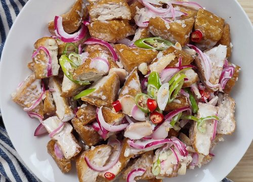

Dinakdakan

Dinakdakan Recipe
Dinakdaakn is a traditional Ilocano dish that stands out due to its distinct creamy texture. The Ilocano style for this dish calls for pig's brain, which is boiled, mashed, and mixed in ifor a rich flavor. However, the pig's brain is now commonly substituted with mayonnaise, as it provides a similar texture but with milder taste. In this version, both boiled and grilled pig parts are combined with mayonnaise for a more creamy finish!
Ingredients
-
1 lb. or 1/2kg of pig ears
-
1 lb. or 1/2kg of pig face (maskara)
-
6 oz or 170g of pig liver
-
1 teaspoon ginger powder
-
1 red onion, sliced thinly
-
6 chili peppes, chopped finely
-
4 tablespoons white vinegar
-
1 teaspoon garlic powder (optional)
-
1 teaspoon ginger, minced (optional)
-
3 pieces bay leaves (optional)
-
1 tablespoon whole peppercorn (optional)
-
1/2 cup mayonnaise
-
8 cups of water
-
salt and peppet (adjust according to preference)
Instructions
-
Boiling Pig Parts
-
Pour all cups of water into a large cooking pot and bring it to a boil.
-
Add the dried bay leaves and whole peppercorns (if you have) once the water is bubbling.
-
Add the pig ears and pig face, then lower the heat and let it simmer for 50-60 minutes or until the meat is tender and flavorful.
-
Rubbing Salt and Ginger Powder on Pig Parts
-
Once the meat has boiled, drain the pot and let any excess water drip off the pig parts.
-
Rub the pig ears and face with salt while rub the liver with ginger powder to balance its strong taste.
-
Grilling to Add Smoky Flavor
-
Preheat your grill to medium-high.
-
Place the pig ears and face on the grill, cooking each side for 4-6 minutes, just until the edges start to crisp.
-
Grill the liver for 5-8 minutes. (Adjust the time based on the thickness of the liver)
-
Mixing the Creamy Dressing
-
In a large bowl, blend the mayonnaise (or mashed pig's brain, if using) with the vinegar.
-
Stir the mixture until smooth and thoroughly combined.
-
Add a dash of black pepper. (Adjust added spice according to preference)
-
Assembling the Dish with Fresh Ingredients
-
Slice the grilled pig parts into bite-sized pieces and place them in a bowl.
-
Add the ginger, chopped chili, sliced onion, and a bit of garlic powder (if desired) then mix altogether.
-
Transfer the mayonnaise mixture and the pig parts with the spices to a serving bowl then have a final mixing of the ingredients.
-
Once mixed, serve, share and enjoy your Dinakdakan!
This recipe is copied from Panlasang Pinoy by Vanjo Merano
Dinakdakan Recipe
Home